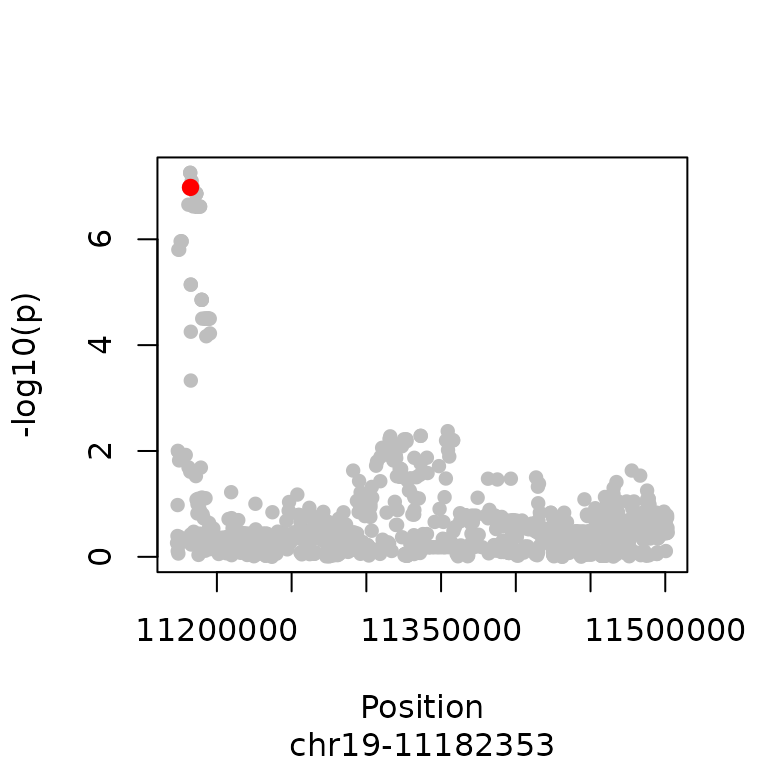

CoPheScan: Example with Fixed Priors
Ichcha Manipur
2026-03-23
Source:vignettes/FixedPriors_03.Rmd
FixedPriors_03.RmdFixed priors are used only when the number of traits and variants to be tested are small.
The default cophescan fixed priors, pa=3.82e-5, pc=1.82e-3, provided
for cophe.single and cophe.susie are those
inferred from the disease-related variant dataset in the CoPheScan manuscript [Supplementary table 12].
Additionally, priors from other datasets tested in the CoPheScan manuscript that match your specific use
case can be taken from Supplementary table 12.
Note: In the previous version (v1.3.2), the default cophescan fixed priors for : pn, pa and pc, were derived from default coloc priors by setting p1=1e-4, p2=1e-4 and p12=1e-5. This has now been changed as described above with priors pa=3.82e-5 and pc=1.82e-3 as default.
pa and pc should be carefully selected based on the dataset.
This example illustrates the use of cophescan for a small dataset using fixed priors where a hierarchical model cannot be applied.
Load test data
See the input data vignette for preparing the input for cophescan analysis.
data("cophe_multi_trait_data")
names(cophe_multi_trait_data)
#> [1] "summ_stat" "LD" "querysnpid" "covar_vec"We will check for causal association between a single trait and a query variant using fixed priors.
querytrait <- cophe_multi_trait_data$summ_stat[['Trait_1']]
querysnpid <- cophe_multi_trait_data$querysnpid
LD <- cophe_multi_trait_data$LDRegional Manhattan plot showing the position of the query variant in the query trait.
# Additional field named 'position' is required for the Manhattan plot. It is a numeric vector of chromosal positions
querytrait$position <- sapply(querytrait$snp, function(x) {
as.numeric(unlist(strsplit(x, "-"))[2])
})
plot_trait_manhat(querytrait, querysnpid)
Cophescan with fixed priors under a single variant assumption (ABF)
CoPheScan can be run using a single variant assumption (which uses
Approximate Bayes Factors) with the cophe.single
function.
Note:
Case where nsnps in the queried region is very high and pa*(nsnps-1) + pc > 1: In this case please reevaluate the supplied priors or run adjust_priors function (see help) which scales down the priors while maintaining the proportion of the supplied priors.
# Run cophescan under a single causal variant assumption by providing the snpid of the known causal variant for trait 1 = querysnpid
res.single <- cophe.single(
querytrait,
querysnpid = querysnpid,
querytrait = 'Trait_1'
)
#> Running cophe.single...
#> SNP Priors
#> pn pa pc
#> 9.60018e-01 3.82000e-05 1.82000e-03
#> Hypothesis Priors
#> Hn Ha Hc
#> 9.60018e-01 3.81618e-02 1.82000e-03
#> PP.Hn PP.Ha PP.Hc
#> 2.09e-03 3.75e-01 6.23e-01
#> PP for causal query variant: 62.3%
summary(res.single)
#> nsnps PP.Hn PP.Ha PP.Hc lBF.Ha lBF.Hc querysnp
#> 1 1000 0.00208927 0.3749638 0.6229469 15.32189 11.96576 chr19-11182353
#> querytrait typeBF
#> 1 Trait_1 ABFWe observe that the posterior probability of causal association for the query variant is 0.969 which indicates that the query variant is causally associated with the query trait.
We can also use the cophe.hyp.predict function to
predict the hypothesis given the posterior probabilities.
res.single.predict <- cophe.hyp.predict(res.single)
#> Hc.cutoff = 0.6
#> Hn.cutoff = 0.2
(paste0(
'The predicted hypothesis is: ',
res.single.predict$cophe.hyp.call,
' [PP.Hc =',
round(res.single.predict$PP.Hc, 3),
']'
))
#> [1] "The predicted hypothesis is: Hc [PP.Hc =0.623]"Cophescan with fixed priors using SuSIE Bayes factors
# Run cophescan with susie (multiple variants) by providing the snpid of the known causal variant for trait 1 = querysnpid
querytrait$LD <- LD
res.susie <- cophe.susie(
querytrait,
querysnpid = querysnpid,
querytrait = 'Trait_1'
)
summary(res.susie)
#> nsnps hit1 hit2 PP.Hn PP.Ha PP.Hc lBF.Ha
#> 1 1000 chr19-11182353 chr19-11182144 0.002115712 0.375218 0.6226663 15.31003
#> lBF.Hc querysnp typeBF idx1 idx2 querytrait
#> 1 11.95277 chr19-11182353 susieBF 1 1 Trait_1
res.susie.predict <- cophe.hyp.predict(res.susie)
(paste0(
'The predicted hypothesis is: ',
res.susie.predict$cophe.hyp.call,
' [PP.Hc =',
round(res.susie.predict$PP.Hc, 3),
']'
))
#> [1] "The predicted hypothesis is: Hc [PP.Hc =0.623]"We get similar results using SuSIE cophe.susie. We
recommend the use of cophe.susie whenever LD information is
available.
Note: When no credible sets are identified using
cophe.susie cophescan reverts to
cophe.single.